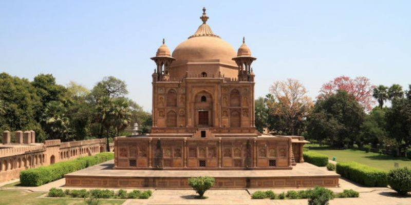

Prayagraj Sangam, also known as Triveni Sangam, is the sacred confluence of three rivers—Ganga, Yamuna, and the mythical Saraswati. Located in Prayagraj, Uttar Pradesh, this site holds immense spiritual significance in Hinduism and is revered as one of the holiest places in India.

Anand Bhawan reflects the rich cultural heritage of India’s freedom struggle and the intellectual legacy of the Nehru-Gandhi family. It was a center for political discussions, social reforms, and nationalist movements during British rule. The mansion embodies a blend of colonial and Indian architectural styles, showcasing the elite lifestyle of the Nehru family while being deeply rooted in the ethos of self-reliance and patriotism.

Azad Park, also known as Chandrashekhar Azad Park, is a historic public park in Prayagraj (Allahabad), Uttar Pradesh. It is one of the largest parks in the city and holds great significance in India’s freedom struggle.

Khusro Bagh is a historic walled garden in Prayagraj (Allahabad), Uttar Pradesh, known for its Mughal-era tombs and stunning architecture. It is an important heritage site that reflects the grandeur of the Mughal dynasty.